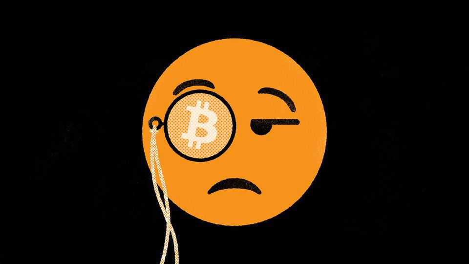
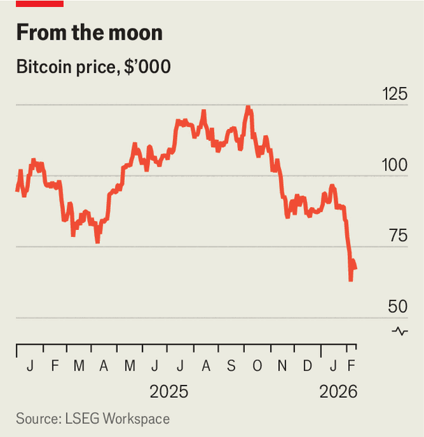

Finance & economics | Buttonwood

Chill winds have been battering America’s eastern seaboard for weeks, driving temperatures in places to their lowest in decades. But that has nothing on the deep freeze into which investors have shoved crypto assets. The value of a bitcoin has dropped from $124,000 in early October to around $70,000 today, and the market value of all cryptocurrencies has fallen by more than $2trn. Though the asset class has slumped before, its boosters now seem more despondent than ever.
In some ways, the extent of their misery is puzzling. Bitcoin’s 45% plunge is by no means the deepest on record: from a peak in late 2021 its price fell by a whopping 77%. It took around three years for the crypto industry’s market value to reach a new high. Today’s bear market is barely four months old.
But look at how much better other asset classes are doing. In 2022 crypto investors could take comfort from the fact that plenty of others were nursing their own losses. From peak to trough, the tech-heavy NASDAQ 100 index fell by over a third that year. Now it is not even 4% below the record high it set a few weeks ago (though some software firms have been battered). Crypto fans are sad because they are lonely.

The forces driving such a volatile and speculative market are always somewhat mysterious. It is clear, however, that leverage and liquidation are playing important roles. At the end of September, just before the plunge began, measurable borrowing against crypto assets amounted to some $74bn—and had more than doubled over the previous 12 months, surpassing its level in late 2021.
Then, starting on October 10th, around $19bn-worth of leveraged bets on crypto were quickly liquidated after falling deep into the red. A steady succession of smaller positions has since been unwound. Worries about Strategy Inc, a firm that borrows and issues shares to buy bitcoin, have intensified. Its share price has dropped by almost 70% since July.
Some relatively new crypto products may be deepening the slump. The advent of crypto exchange-traded funds (ETFs) in 2024 was supposed to support prices by broadening the pool of potential buyers. It worked, for a while. The iShares Bitcoin Trust ETF (IBIT) became the fastest-growing ETF in history, with assets worth almost $100bn by October. Now, though, ETFs are pulling prices down. Over the past 80 trading days IBIT has seen outflows worth $3.5bn—its first extended sell-off. Most of the capital invested in the fund has now suffered losses.
The final factor weighing on crypto is the hardest to quantify: the vibe is off. For a speculative asset class with no fundamental value or income-generating potential, intangible aura is everything. And the aura of excitement that once surrounded digital assets seems to have vanished.
That is partly because they have lost their rebellious streak. If America’s president and his family are knee-deep in an asset class, how counter-cultural can it be? Charles Hoskinson, a co-founder of Ethereum, a blockchain platform, put it well last month. “We all basically became part of the system, and you know what the system does when you become part of it? They make it not cool.”
For some firms, crypto’s newly stodgy reputation has upsides. Institutionalisation has helped issuers of stablecoins, which ease digital payments. Assets like bitcoin, though, have lost their cool allure while gaining little in return; they might seem to be part of the “system”, but they have not actually been adopted by it. Professional, strait-laced investors still eschew crypto. A survey by Bank of America in September suggested that the vast majority of fund managers had no allocation to crypto at all. Digital assets accounted for just 0.4% of the total portfolio value of respondents.
Central banks, meanwhile, are buying gold to protect themselves from inflation, geopolitical threats and the risk of sanctions. The digital assets that once promised an alternative to “fiat” money have been left out in the cold. The Czech central bank became the first to advertise any purchases of crypto last year, snapping up an experimental (and piddling) $1m-worth of bitcoin. It has announced no plans to buy more.
Digital assets have proved far hardier than many financial columnists—always keen to write obituaries for them—once suspected. Despite bear market after bear market, they have always defied predictions of wholesale collapse. But this crypto winter feels unusually bitter for good reason. Unless the vibes improve, do not expect a thaw.■
Subscribers to The Economist can sign up to our Opinion newsletter, which brings together the best of our leaders, columns, guest essays and reader correspondence.